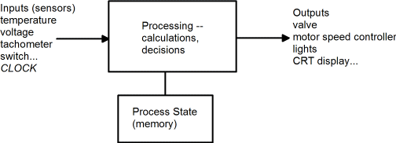
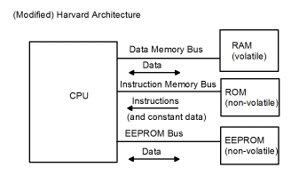

| Previous Section | Next Section | Index | Questions | Search the Text |
What is a microcontroller? There are two ways of approaching this question. One is that it is a miniaturized controller. The second is that it is a microprocessor with specific design goals. We will look at it both ways.
Electrical-mechanical and mechanical controllers have been around for as long as there has been machinery to control. Controllers have three essential parts:
Inputs can be viewed as sensors. Some sensors monitor equipment or physical conditions. These include position sensors, tachometers, thermometers, light sensors, strain gauges, radio receivers, and many other devices. Other inputs are for human intervention such as switches and knobs. Another important input is time, typically clock "ticks".
The processor can be mechanical/hydraulic (automatic transmissions in automobiles), electro-mechanical (relays), or electronic (state machines, analog or digital computers). The processor makes use of the inputs in combination with an internal state, and produces outputs.

Outputs are used to control equipment (servo positioners, valves, pumps, heating elements...) or provide indicators for humans (lights, alarm bells, printer, liquid crystal displays...).
The low cost of microcontrollers have made them ubiquitous in devices such as thermostats, telephones, microwave ovens, and even such things as toasters and other devices thought of as "low tech."
Microprocessors, computers on a silicon chip, have been available since the early 1970's when they were first designed for electronic calculators (Intel 4004). Their small size made them ideal for use as controllers. However for many years they could not compete with electro-mechanical controllers in terms of price and reliability in hostile environments. Good system engineering and increasing complexity of systems overcame the reliability problems, and microcontrollers overcame the costs.
The cost of the microcontroller itself isn't the issue, but the cost of the complete controller system is. An early microprocessor could take dozens of additional support chips to make into a working system. A microcontroller chip contains not only the processor, but also the memory (storage) needed, and a large number of I/O connections missing on a microprocessor. This not only reduces system cost but also increases reliability by reducing the number of connections. Better immunity to electrostatic fields and temperature variations make the microcontroller ideal for hostile environments such as automobiles. Luxury automobiles contain dozens of microcontrollers performing various tasks.
In modern computers, data is represented as bits. A bit, or binary digit, is capable of holding two values represented by two voltages high h and low l. Bits are grouped together in an ordered collection of 8 bits called a byte. The bits are numbered 0 through 7, with 0 referred to as the least significant bit or lsb, and 7 as the most significant bit, or msb. Most microprocessors handle bytes as the smallest unit. Memory stores data in byte-sized units or locations. Each location has an address. Such a memory is referred to as byte-addressable.
It can be seen that each byte can hold 256 different values, representing all the combinations of high and low states of eight bits. To handle cases where more different values are required, multiple bytes are used. The most common size is 2 bytes or 16 bits, and is called a word. High-end microprocessors have word sizes that are larger than 16 bits, however microcontrollers at this time typically are limited to 16 bit words to reduce cost.
The meaning of the bits is determined by the microprocessor user or programmer. The microprocessor can perform operations on the bits for several predefined meanings. Each bit can be considered to be a Boolean value. In this case h is true and l is false. A byte holds eight independent Boolean values. The processor can perform bitwise Boolean operations on pairs of bytes. By bitwise we mean each bit N of one byte is operated on with bit N of the second byte, and the Boolean result is placed in bit N of the result byte.
Another common representation is an integer value. A byte can represent 256 different integer values. When using unsigned integer representation, the byte represents any integer value from 0 to 255. When using signed integer representation, the byte represents any integer value from -128 to 127.
In implementing a user interface, a byte is often used to represent a character, typically using the ASCII character set.
A microcontroller contains the following parts:
The Central Processing Unit performs integer and Boolean arithmetic, reads from the inputs, writes to the outputs, and makes decisions. Its operation is under control of a program, which is a list of instructions for the processor to perform.
RAM memory is used to store values read from the input, the results of calculations, and other aspects of processing state. The CPU can both read and write to RAM memory at a high rate of speed. The down-side of RAM memory is that it is volatile - its contents are forgotten if the power is removed. Memory is organized into units of 8 binary (two-valued) bits, called bytes. Bytes are counted in units of kilobytes (KB) which represents 1,024 bytes (1024 = 210), megabytes (MB) which represents 1024KB. Microcontrollers typically have much less than one megabyte of memory, many with a kilobyte or less.
There are two major classifications of RAM memory, static and dynamic. Dynamic memory will forget its contents over time (a few milliseconds) unless it is refreshed by re-writing its contents. Static memory does not need to be refreshed. The advantage of dynamic memory is smaller size which means lower cost. However the difficulty of refreshing dynamic memory, and the small amount of RAM memory typically needed in a microcontroller has meant that almost all microcontroller designs use static memory.
ROM memory is non-volatile. However ROM memory can only be read. In a microcontroller, ROM memory is used to hold the CPU program and tables of data values that are not subject to change.
There are several varieties of ROMs that differ in the ability to write, or program their values.
Another variation of EEPROM memory allows erasing as little as a single byte at a time. This type is referred to simply as EEPROM, or sometimes as Read Mostly Memory. It is particularly useful for program data that needs to be preserved when power is turned off or otherwise lost. This would commonly be calibration or configuration values. The number of times a particular location can be written is typically around 100,000 times, and writing is much slower than writing RAM memory, so the EEPROM is only used when the values must be non-volatile.
While virtually all microcontrollers contain RAM and ROM, fewer contain EEPROM, and those that do tend to have only a small quantity. However EEPROM memory is easily attached externally to microcontrollers that do not have this type of memory device.
A microprocessor presents a memory interface which can be used to connect to external (to the microprocessor chip) memory and peripheral, Input/Output devices. The interface consists of three buses (groups of signals):
There are two prevalent architectures for connecting memory to the microprocessor. The Von Neumann Architecture is used in the 68HCS12 covered in this text. There is a single bus used for both the CPU instruction program and for data. Both the instructions and the data can be read from any of the attached memory devices.
The Modified Harvard Architecture is used in many microcontrollers such as the Intel 8051 and Atmel AVR devices. The CPU instructions are read over one bus, which is connected to ROM, and the data is read over a second bus, which is connected to RAM. What makes it "modified" is that additional CPU instructions are provided which can read the ROM as data, and access the EEPROM.

Microcontrollers have I/O devices and interfaces built in to reduce system chip count. Typically included are:
In this course we will study the Freescale Semiconductor 68HCS12 microcontroller. Microcontrollers come in many variations. The one we will specifically use is the MC9S12DP256B, and the remainder of this text will assume that variation is being used unless otherwise stated. This is a modern revision of the older 68HC12 microcontrollers, and the two versions are similar in most respects. The variations differ in the quantity and type of internal memory, external memory interfaces, provided I/O devices, speed of operation, and operating voltages. The modular design approach of the 68HCS12 allows many variations by adding or eliminating modules on the chip. The MC9S12DP256B has more modules than most of the variations, making it ideal for learning microcontrollers. Some more recent variations have additional, advanced features, such as USB interfaces, which are not discussed in this text.
In terms of what we've covered so far, the MC9S12DP256B has the following features:
Note that some port pins have multiple functions, and only one can be active at a time. Some functions can be routed to different ports to resolve conflicts. Most ports, if not used for the functions listed above, can be used as general purpose I/O pins.
For instructional use, the microcontroller is mounted on a development board which provides numerous peripheral devices to help in understanding and utilizing the microcontroller. The Flash EEPROM is loaded with debugging and program loading software. This text uses the Wytec Dragon12-plus board which has a MC9S12DG256B microcontroller. This differs in having only 2 Controller Area Network interfaces and no Byte Data Link Controller, but is the same in all other respects. If you are using a different development board, discover what microcontroller is used and find out how it differs from the one discussed in this text. Versions differ primarily in amount of memory, peripheral devices, and package pins. Another popular variation is the MC9S12C32 microcontoller and close relations, which are discussed in the appendix, The MC9S12C Family
In the remainder of the text, this microcontroller will usually be referred to as the HCS12, the generic name for the second generation 68HC12.
Reference: MC9S12DP256B Device Users Guide